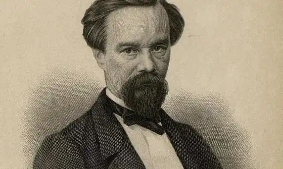

Афанасьєв-Чужбинський, Олександр Степанович (справжнє прізвище — Афанасьєв; інші псевдоніми — Невідомий, Лубенец, Пустинник та ін.; 11.03.1816, с. Ісківці, тепер Лубенського району Полтавської області, Україна — 18.09.1875, м. Санкт-Петербург, тепер Російська Федерація) — письменник, історик, мовознавець, етнограф. Писав українською та російською мовами.
Народився в сім'ї дрібного поміщика. З 1829 навчався в Ніжинській гімназії вищих наук князя Безбородька (тепер Ніжинський державний університет імені Миколи Гоголя), яку закінчив 1835 зі званням студента та правом на чин 14-го класу. 1836 вступив юнкером у Білгородський уланський полк. 1843 вийшов у відставку в чині поручика.
Після завершення служби повернувся в Україну. 1843 познайомився з Т. Шевченком, 1845–1846 супроводжував поета в подорожі Лівобережною Україною. З 1847 служив у канцелярії воронезького губернатора, був редактором неофіційної частини газети "Воронезькі губернські відомості" ("Воронежские губернские ведомости"). 1856–1859 брав участь в етнографічній експедиції приморських областей Росії, яку організувало морське міністерство. Після повернення жив у м. Санкт-Петербурзі. 1864 заснував газету "Петербурзький листок" ("Петербургский листок"), 1873 працював відповідальним редактором сатиричного журналу "Іскра" ("Искра"). В останні роки життя був інспектором шкіл грамотності, завідував музеєм Петропавлівської фортеці у Санкт-Петербурзі. Надрукував вірші українською мовою в альманахах "Ластівка" (1841) і "Молодик" (1843). Опублікував 1855 у м. Санкт-Петербурзі анонімну збірку віршів "Що було на серці", потім публікував свої твори в журналі "Основа". Афанасьєв-Чужбинський — один із представників української романтичної (див. Романтизм) поезії 1840–1860-х. Найвідомішими є його романсові, інтимні поезії, перейняті щирим почуттям ("Шевченкові", "Прощання", "Безталання", "Є. П. Гребінці" та ін.). Вірш "Скажи мені правду, мій любий козаче" став народною піснею.